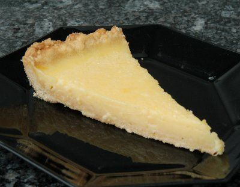

| Zutaten für 12 Stück: | |
| Mürbeteig: | |
| 200 g | Mehl |
| 2 El | Zucker |
| 1 Prise | Salz |
| 125 g | kalte Butter |
| 1 | Eigelb |
| 2 El | kaltes Wasser |
| Belag: | |
| 1.5 dl | Zitronensaft |
| 150 g | Zucker |
| 75 g | Doppelrahm |
| 5 | Eier |
| wenig | Puderzucker |
Ein Kuchenblech von 28cm Durchmesser mit Butter ausstreichen und mit wenig Mehl bestäuben. Kühl stellen.
Für den Teig in einer Schüssel Mehl, Zucker und Salz mischen. Die Butter in Flocken dazu schneiden. Alles zwischen den Fingern zu einer bröseligen Masse reiben. Eigelbe und Wasser verrühren, beifügen und die Zutaten rasch zu einem glatten Teig verkneten. Zu einer Kugel formen und in Klarsichtfolie gewickelt 30 Minuten kühl stellen
Den Teig auf der leicht bemehlten Arbeitsfläche unter Klarsichtfolie zu einer Rondelle von gut 30cm Durchmesser auswallen und das vorbereitete Blech damit auslegen. Den Rand gut andrücken. Nochmals 30 Minuten kühl stellen.
Den Backofen auf 200°C vorheizen.
Den Teigboden mit Backpapier belegen und mit getrockneten Hülsenfrüchten oder Reis beschweren. Im 200°C heissen Ofen auf der untersten Rille 15 Minuten backen. Dann Hülsenfrüchte bzw. Reis sowie Backpapier entfernen, die Ofentemperatur auf 180°C reduzieren und den Teigboden nochmals 10 Minuten backen. Herausnehmen und leicht abkühlen lassen.
Für den Belag Zitronensaft, Zucker und Doppelrahm gut verquirlen. Ein Ei nach dem anderen unterschlagen.
Die Füllung auf den Teigboden geben und die Tarte im 180°C heissen Ofen auf der untersten Rille nochmals etwa 20 Minuten backen: wenn man das Blech rüttelt, soll die Creme in der Mitte noch leicht wabbelig aber dennoch nicht zu flüssig sein. Herausnehmen, abkühlen lassen und vor dem Servieren mit Puderzucker bestäuben.
Den Teig in der halben Menge zubereiten. Dabei 1 Eigelb, jedoch kein Wasser verwenden. Für den Belag von 2-3 Portionenküchlein 1/4 der rezeptierten Menge, jedoch 1 ganzes Ei und 1 Eigelb verwenden.
Pro Stück: 5g Eiweiss, 14g Fett, 27g Kohlenhydrate, 262 kcal, 1095 kJoule
Kochen 12/2004 S.19
Schmeckte am 1.2.2005 sehr gut zum Geburtstagsessen für Herbert. Ich fand den Mürbeteig etwas auf der trockenen Seite und zu wenig süss. Vielleicht lag das daran, dass ich den Teig am Vortag zubereitet hatte? Beim zweiten Versuch gab ich etwas mehr Zucker. Da aber das Blech viel grösser war wurde der Teig zu dünn und brannte leicht an was hässlich Verfärbungen zur Folge hatte.
Am 17.3.2010 mit einem richtigen Blech gelang mir die Tarte sehr gut. Sie schmeckt wunderbar! Ich verwendete wegen der Aktion den Saft von 6 Limes. RE